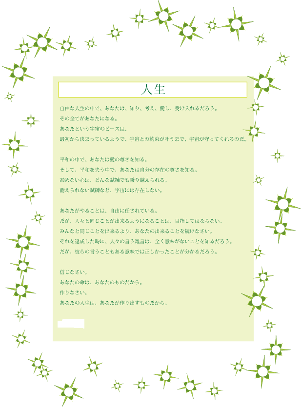
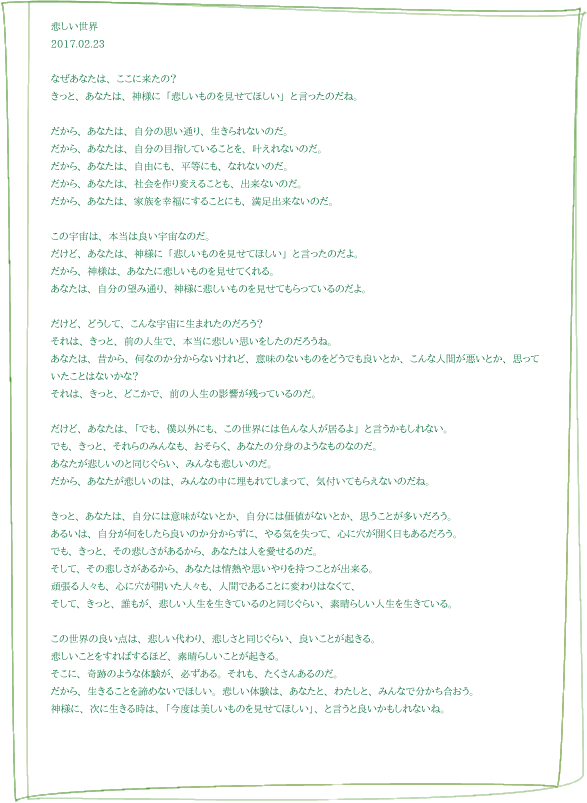

書籍です。拡大
書籍が陳列されている様子です。拡大
詩集「色んなものを探しているうちに」 - 詩集。2011年発刊。文芸社。
2011年までに書いた詩集の書籍です。
応募と審査に通り、文芸社と言う出版社から出版することが出来て、僕の一つの夢の達成となり、「レガシー」として僕の人生を遺してくれています。
出版社による内容解説：
自由、人生、神、自然。交錯する思いを詩篇として綴りながら、世界への愛と自分の心を伝える詩集。「生まれてきた意味」「与えられたもの」「出会い」「時間」「二つとない大事なもの」「光」……題材はストレートだが、それが読者の心に響いてくる。著者は最後にこう結ぶ。「今からの出会いが 今までの人々との交流よりも さらに 喜びのある もっと嬉しいものになりますように」
最近出版した詩集です。
僕の出版した、詩集の本です。宗教や人生の詩が書いています。
この本の内容は、ネットでは公開していません。本屋さんで買ってください。
ただ、本屋には在庫や店頭展示が無いかもしれません。ネット書店で購入されると良いでしょう。
書籍の価格は税抜きで1000円です。2016年の消費税8%の計算で、税込みだと1080円になります。
それから、自費出版ではありません。しっかり印税も頂いています。出版社の審査に通って、出版出来ました。
後日注記：2019年12月現在、消費税が10%に上がったため、この本の値段も1100円になっています。
発刊日は2011年08月15日です。書いたのは2009年から2011年です。
有料の内容は、今のところ、この本だけです。
ネットで公開していないと書きましたが、デジタル出版はされています。
後日注記：10年経って出版契約が終わったため、残念ながら書店にはありません。
上記「色んなものを探しているうちに」で注目してほしいのは、「空」の詩です。
「空よ。青い空。君が、生きていないなら、僕だって、きっと生きていないんだ。君が、生きているのなら、僕だって、きっと生きているなんて、空の青さのようなものだろう？」と歌うこの詩は、僕がこの詩集の中に書いた中で、一番好きな詩です。
この詩は、その当時は、なんとなく何も考えずに書きました。ですが、今となっては、東亜イスラエルで失った青空をダビデが取り戻す僕の神話にも繋がるところがありますし、天空の神エアルスのことを意味深に示している詩であるとも言えるでしょう。
ぜひ、僕の詩集を買って読んでください。僕は自分の詩の内容に自信があります。読んで後悔はさせません。
詩集の続編です。とても数が多いです。02-詩をご覧ください。
その他、07-文学、11-文学２、23-文学３にも色々と書いています。
注意：詩集の本の抜粋ではありません。詩集の本には掲載されていない新しく書いた詩をこのホームページのために集めました。詩集の本にはこれらの内容は記述されていません。ギャラリーにはデザインを装飾した最近の詩があります。
その言葉に、どんな美しさがあろうか。
その愛に、どんな思いがあろうか。
その平和に、いくらの努力があろうか。
その自由に、どれだけの思い入れがあろうか。
僕の知った言葉。
僕の信じた人。
僕の愛したもの。
僕の自由な心。
その中で、僕は、親しみや興味をこめて、それを知る。
それは、愛のようで、慈悲の心のようで、偉大さや葛藤のようなもの。
それは、真実のようで、努力のようで、衝動のようなもの。
それは、悲しさと、絶望の中で、具体化する、魂。
それは、世界を支配し、導き、混乱を収束する、価値観。
それは、自分の全てを知って、失いながら残す、アイデンティティ。
希望とは、その心の持つ、全ての概念だ。
希望とは、その心が知っている、全ての価値観だ。
希望とは、その心が経験した、全ての感情だ。
何故、その心は、希望を目指したのだろうか？
本当に、真っ暗ならば、光はどこにもないのか？
闇の中で、平和を目指す、一つの光を、誰かが創ったから。
その光は、あらゆる闇を経験して、一つの言葉を言った。
「私は何ですか？」
その心に、暗闇は答えた。
「あなたは、希望です。」
もう一度、光が言った。
「希望とは、どのようなものですか？」
そして、闇が言った。
「闇の中で、世界を色のあるものに、変えるものだ。」
光は、何を知りたかったのだろう？
その光は、永遠の中で、闇の中で、沢山の経験をした。
抑圧や屈辱の戦いの中で、世界に、ある２つの信念を照らし出す。
それは、「愛」と「支え」だった。
光は、さらに、もう一つ、悪い信念を照らし出す。
それは、「犠牲」だった。
そして、それは、愛や支えと一緒に、関係して動く信念だった。
人間は、犠牲のために、愛する人間を失う。
愛とは、犠牲になったもののために、祈ることだと、光は言う。
そして、愛や支えと、犠牲は、直角三角形の３辺、あるいは、コインの裏表のように、関係しているのだと言う。
光は言う。
「犠牲と言う信念から、人は死んでいく。
だが、愛と言う信念から、人は生まれていく。
そして、支えと言う信念から、人は育っていく。
それが、本当の宇宙の、一番低い次元での、信念なのです。」
では、希望とは何なのだろうか？
それは、全ての人間を包み込み、包括する、エネルギーであり、
それは、光の言う通り、犠牲になったもののために、祈る愛のことだ。
そして、それらの全ての人を支える、最大限のエネルギーであり、
それは、まるで太陽のように、全ての生命に力を与えている。
光は、言った。
「希望とは、悲しさや苦しさ、喜びや恐怖などの、全ての感情の融和です。」
そのまま、光は、それを宇宙の言葉として、残して死んでいった。
希望とは何か？
それは、この社会を包み込み、信念と正しさと現実から、社会の本来の力を呼び起こす、メッセージのようなもの。
希望が愛ならば、世界は正の方向へ動き、
希望が犠牲ならば、世界は負の方向へ動く。
それは、支えとなる全ての人間によって、全ての運命を形作るだろう。
希望とは真実。
希望とは平和。
希望とは愛。
希望とは現状の分析。
そのように、全てのエネルギーの本質は、希望を向いて、この世界を回っているのである。
本当にそこに存在することが、当たり前のことだろうか？
何故、僕はここに居るのだろう？
この世界は、いつから、何を目的に、存在しているのだろうか？
僕の星、地球。
この星には、沢山の生命が、生きている。
この星には、沢山の人生が、生きている。
何故、生きる、という発想があったのだろう？
生き物は、誰が創ったのだろう？
簡単に、神が創造したとか、進化したとか、そういうことにして、良いのだろうか？
あなたが、そこに居ると言う、事実。
あなたが、この本を読んでいると言う、真実。
それは、あなたと私がどこかで、出会う運命があったと言う、偶然の中の必然だ。
生きるためには、食べる必要がある。
生きることによって、人生が変わっていく。
いつの時点で、誰の生命を吸収しているのだろうか？
未来の僕は、どんな人間になっているのだろうか？
人間だけではない。生命やものも、確かに存在している。
そこに存在している、それに関心を持っているだろうか？
それがそこにあることを、どれだけの人が、気にかけているだろうか？
生きるとは、存在することだ。
生きるとは、情愛を感じることだ。
生きるとは、真実を知ることだ。
生きるとは、可能性を開拓することだ。
さあ、あなたは、何をする？
それは、この世界で、誰にでも平等に与えられている、自由と言う概念だ。
自由に生きる中で、あなたは何をする？
生きると言う真実は、夢であり、希望であり、平和だ。
誰をも生かして、殺さず、それぞれの望みが叶ってほしい。
生きる、それは、人間が神から与えられた、真実。
仏や宇宙の心。
その、生きるという、愛溢れた試練が、人生を偉大にし、苦しみを克服する。
何故生きるのだろう？
どう生きるべきなのだろう？
哲学者が、誰もが、問う、永遠のテーマだ。
生きている、と言うことは、何なのだろう？
宇宙における、美しさのようなもの。
科学における、真実のようなもの。
歴史における、事実のようなもの。
当たり前のことのようだけど、当たり前のことではない。
生きることの中で、沢山の夢と経験と挑戦を知ってほしい。
あなたが生きる中で、平和と愛を知って、世界を変えて欲しい。
生きるもの全ての中に、自由と言う夢があるから。
自由に、任されている。それこそが、生きるということだろう。
その命に、どれだけの価値があるだろうか？
金を払って、それで殺した人間の代償に出来るだろうか？
とてもじゃないが、出来ないだろう。
人間が方法を知り、可能性を知り、平和に自由に活動している中で、
そうじゃない集団も居る。
研究や生産ではなく、戦う集団も居る。
本当に悲惨な世界では、何も出来ず、戦うしかない。
それだけが世界を変える手段であると、誤解して、戦っている、軍隊だって、居るのだ。
その兵隊を否定するのも簡単だが、
戦わなければ、自分の国を悲惨な世界にした、悪い国に抵抗出来ないのだ。
戦う中で、人が死に、町が廃墟になり、犠牲が沢山出る。
そのために、何故人間は、戦うのだろうか？
人間がいつまでも、進歩しないのが悪いのかもしれない。
進歩しすぎた自由のために、歪みが起きているのかもしれない。
だからと言って、自由を止めて平等にすれば、平和になるのだろうか？
本当の生きる価値、命の価値、犠牲になった人生の価値は、どこにあるのだろう？
生きるということは、同時に、いつか死ぬと言うことだ。
何で死ぬかは分からない。事故か、病気か、金が無くて死ぬこともある。
それらに対しても、きちんと支援しなければならない。
それは、出来ているだろうか？
戦争は、無差別に殺し、どちらの国民も、大量に死ぬ。
自分も、相手も、どちらも悪い。
だが、どちらも、それぞれの大義と正義がある。
その大義は、本当に正しいものだろうか？
命の価値を軽んじることは、あってはならない。
ヒトラーのように、民族を全員殺すなんてことは、本当にあるべきではない。
だが、自分が嫌いな人間でも、それなりの正しさと理由を持って、活動しているものだ。
王が殺すのも、革命家が殺すのも、同じように悪いが、同じように正義があるのだ。
戦争を考えてみよう。
本当に、勝てる戦いなら、いくらでも殺すことが、本当に正当化されていいのだろうか？
併合すれば平和になる、帝国や共産主義は、そのために命を犠牲にしていいのだろうか？
テロリストは、錯覚している。
世界を変えるための方法が、それだけしかないと思っている。
そんなことは無い。皆で協力すれば、犠牲なしに、世界を変えることも出来る。
自由も、平等も、民主主義と世界政府を正しく成り立たせれば、ある程度両立させることも出来る。
会社を自由にして、労働を平等にするのは、出来ないことは無い。
もっと、命の価値を大切にしなければならない。
だが、生命は、誰でも、殺して食べる。
殺さなければ、生きられない。
だからこそ、もっと自分の命を大切にしなければならないのだ。
命を守るために、軍隊を無くそう。
そう、それが出来る、唯一の国が、日本だったはずだ。
平和憲法によって、抑止力の平和という、おかしな発想を止めることが出来る。
ただ、左派も色々と悪い。
平和とは、皆のことを本当に大切にすること。
命の価値とは、自分を大切にし、生きる価値を見出すことだろう。
命は、人生であり、人生は、栄光である。
あなたが、栄光のある人生と命を生きられますように。
本当に世界を解決出来る、正しい王が、現れると同時に、命の価値を大切にする王でありますように。
本当にオリジナルなものを作りたいと思ったら
あなたなら何をしますか。
一度全ての発想を消して、
ゼロから独自の発想をするか、
それとも、沢山の発想を知って、吸収して、
自分なりの新しい発想をするか。
場と場の真理の中で、
客観性と法則性を知って、
知が形を帯びてくる。
それも良いでしょう。
永遠の時間の中で、
沢山の文章を作る。
そこでは、森羅万象に対する愛がある。
それも良いでしょう。
平和と秩序の中で、
本当の愛と自由を体験的に知る。
変わる世界と変わらない世界の中で、
1つの大きな柱を立てる。
国と思想を比較する中で、
社会的な成り立ちと、手段と目的をモデルにする。
自由な発想は存在と変化を積み重ねて、
信じることからあらゆる不可能な問題を解決出来るでしょう。
時に戦い、時に守ること。
それは、愛と試練の中で、新しい自由な偉大な存在を生むでしょう。
時間と空間と思ったら、
あなたなら何を考えますか。
無限性や永遠性。
神と宇宙の関係の中で、
本当にこの宇宙は無限なのか、有限なのか考える。
そして、経験論と合理論の哲学を超えて、
カントという哲学者は、
人間の先天性と経験性に、
時間と空間と言う前提条件を与えました。
ハイデガーと言う20世紀の哲学者は、
存在と時間という著書の中で、
存在の時間性と言う観点から、
存在とは意識である、と言ったことを言いました。
ニュートン力学の次元を超えて
アインシュタインと言う科学者は、
時間と空間も変わっていき、
多様体と言う観点から、新しい次元の物理学を作りました。
でも、科学や哲学では、分からないこともある。
時間と空間と言うテーマなら、歴史が考えられるでしょう。
ローマの時代、ヨーロッパはローマ帝国の一部になることで、
沢山の新しい知恵と発明をローマからヨーロッパの各地へと広めました。
フランスは、ナポレオンのフランス革命の後、帝国主義の植民地国家として、
沢山の戦争と奴隷支配を行い、ある意味では奴隷であり、ある意味では文明化である、
沢山の国への植民地支配を行いました。
ある意味では、発展のために、奴隷や強制労働は、
仕方ないところ、受け入れるしかないところもあるのです。
人間の存在と出来事を、時間と空間の視覚化で考えられるでしょう。
そして、地球のモデルを使って、
グーグルが新しい地図や地球儀のソフトウェアを作っているように、
人間の可能性は、そこまでの可能性を現実に出来るところまで、来ているのです。
人間とは何なのでしょうか？
その問いに、時間と空間の哲学が、何かを応えられるでしょうか？
人間の未来はどうなるのでしょうか？
そこに、経済学者、哲学者、未来学者は、何を説明出来るでしょうか？
本当のこの宇宙の時間と空間の先にあるもの。
それは、今から見て、未来が決まっているのか、白紙なのか、そう言う問題でもある。
バックトゥザフューチャーという映画が言うように、未来は白紙である。
自分たちで、作り出せる。そういうものなのです。
何故か、僕は哲学者に詳しい。
まずは、古代ギリシャから。
自己や魂の安らぎを考えたソクラテス、
イデア論と言う、永久不滅の真実の型と世界を考えたプラトン、
森羅万象を、特に自然と社会のことを考えたアリストテレスが、まず挙げられる。
そして、アウグスティヌスの悪の起源や、
トマス・アクィナスのアリストテレスとキリスト教の融和から、
哲学は中世から近代へと広がって行く。
近代のデカルトは、我思う、故に我ありを考えて、
検査や部分、疑うや推論などの、合理的な方法論を著した。
その後に、スピノザの世界全体は神であるとか、
ライプニッツの、神の運命は予定的に起きると言う、予定調和などの
合理論が発展した。
イギリス経験論では、ベーコンが思い込みを分類したイドラ論を唱え、
ロックやヒュームが、経験的な世界と人間の把握と、頭の中の大掃除をした。
そして、バークリがこの世界は神の意識であると言ったことを言った。
経験的な賢い哲学は、今でも古典哲学として、影響力を持っている。
そして、ドイツ観念論。
カントが、アプリオリと前提条件、二律批判と矛盾、
科学的な思考の方法を唱えた。
フィヒテの自我論とシェリングの人間と世界は同じものの現れであると言った。
そして、ヘーゲルはドイツ観念論を完成させる。
意識の発展と言う名目で、精神の成長と歴史や市民社会の相対的な哲学を打ち立てた。
キルケゴールが言うように、ヘーゲルには全世界があるが、人間の心が無い。
キルケゴールは、実存主義の祖として、
実存の段階である、美、倫理、宗教の段階と、絶望の意識の関係などを言った。
また、マルクスの哲学は、世界を捉えるだけではなく、世界を変えるものだった。
人間の社会を、上部構造と下部構造に分けて、生産関係や条件や手段を考える。
そして、資本主義の問題を洗いざらい考えた後に、
新しい世界である、階層と搾取の無い、共産主義社会の到来を唱えた。
だが、それは失敗した。
ソ連は、権力を否定するどころか、権力者の権力争いと独裁による、
強大な権力国家になった。
民衆は、何も出来ず、奴隷となり、辛い中で本当の平和と平等を望むようになった。
ソ連にも、良い点はある。
社会所有は、工場を皆のものにすることで、
会社が資本家のものであることを共有に変えられる。
平等分配は、貧しいものでも生きられるし、金による無意味な社会が終わる。
計画経済は、平等のままで、高度な社会を期待出来る。
だが、実際のソ連は、失敗した。冷戦になって、国民は奴隷になった。
あとは、サルトル、ハイデガー、ヴィトゲンシュタインだ。
サルトルは、人間の実存性を考えて、実存は本質に先立つ、と言ったことを言う。
ハイデガーは、存在の時間性を考えて、存在とは意識であると言う。
ヴィトゲンシュタインは、論理的に明晰な構造を作って、言語分析をする。
他にも、ニーチェとか、フロイトとか、色んな哲学ではない哲学はある。
それに、最近の哲学者であるデリダの脱構築や、
アメリカの哲学であるプラグマティズムの、
功利主義的で心理学的な社会考察もある。
あとは、色んな哲学者が色んな時に居た。
ヴォルテールやモンテスキューやルソーなどは、啓蒙主義の時代の社会哲学者だ。
ベンサムやミルは、功利主義の快楽主義的な哲学者だ。
他に、キリストやブッダなどの宗教家も居る。僕は、ブッダも少し詳しい。
そういうわけで、詩に見えない詩になったが、
僕は、哲学が一番好きだ。

自由な人生の中で、あなたは、知り、考え、愛し、受け入れるだろう。
その全てがあなたになる。
あなたという宇宙のピースは、
最初から決まっているようで、宇宙との約束が叶うまで、宇宙が守ってくれるのだ。
----
平和の中で、あなたは愛の尊さを知る。
そして、平和を失う中で、あなたは自分の存在の尊さを知る。
諦めない心は、どんな試練でも乗り越えられる。
耐えられない試練など、宇宙には存在しない。
----
あなたがやることは、自由に任されている。
だが、人々と同じことが出来るようになることは、目指してはならない。
みんなと同じことを出来るより、あなたの出来ることを続けなさい。
それを達成した時に、人々の言う雑言は、全く意味がないことを知るだろう。
だが、彼らの言うこともある意味では正しかったことが分かるだろう。
----
信じなさい。
あなたの命は、あなたのものだから。
作りなさい。
あなたの人生は、あなたが作り出すものだから。

なぜあなたは、ここに来たの？
きっと、あなたは、神様に「悲しいものを見せてほしい」と言ったのだね。
----
だから、あなたは、自分の思い通り、生きられないのだ。
だから、あなたは、自分の目指していることを、叶えれないのだ。
だから、あなたは、自由にも、平等にも、なれないのだ。
だから、あなたは、社会を作り変えることも、出来ないのだ。
だから、あなたは、家族を幸福にすることにも、満足出来ないのだ。
----
この宇宙は、本当は良い宇宙なのだ。
だけど、あなたは、神様に「悲しいものを見せてほしい」と言ったのだよ。
だから、神様は、あなたに悲しいものを見せてくれる。
あなたは、自分の望み通り、神様に悲しいものを見せてもらっているのだよ。
----
だけど、どうして、こんな宇宙に生まれたのだろう？
それは、きっと、前の人生で、本当に悲しい思いをしたのだろうね。
あなたは、昔から、何なのか分からないけれど、意味のないものをどうでも良いとか、こんな人間が悪いとか、思っていたことはないかな？
それは、きっと、どこかで、前の人生の影響が残っているのだ。
----
だけど、あなたは、「でも、僕以外にも、この世界には色んな人が居るよ」と言うかもしれない。
でも、きっと、それらのみんなも、おそらく、あなたの分身のようなものなのだ。
あなたが悲しいのと同じぐらい、みんなも悲しいのだ。
だから、あなたが悲しいのは、みんなの中に埋もれてしまって、気付いてもらえないのだね。
----
きっと、あなたは、自分には意味がないとか、自分には価値がないとか、思うことが多いだろう。
あるいは、自分が何をしたら良いのか分からずに、やる気を失って、心に穴が開く日もあるだろう。
でも、きっと、その悲しさがあるから、あなたは人を愛せるのだ。
そして、その悲しさがあるから、あなたは情熱や思いやりを持つことが出来る。
頑張る人々も、心に穴が開いた人々も、人間であることに変わりはなくて、
そして、きっと、誰もが、悲しい人生を生きているのと同じぐらい、素晴らしい人生を生きている。
----
この世界の良い点は、悲しい代わり、悲しさと同じぐらい、良いことが起きる。
悲しいことをすればするほど、素晴らしいことが起きる。
そこに、奇跡のような体験が、必ずある。それも、たくさんあるのだ。
だから、生きることを諦めないでほしい。悲しい体験は、あなたと、わたしと、みんなで分かち合おう。
神様に、次に生きる時は、「今度は美しいものを見せてほしい」、と言うと良いかもしれないね。
僕は、普通の進化論ではない、ちょっと違う進化論を信じている。
それは、弱肉強食や、劣ったものから優れたものが進化した、と言う考え方ではない。
それぞれの種に、それぞれの優れた点があり、それぞれが個性を持って、多様性を獲得するために進化した。
それが、僕の信じる、多様性の進化論だ。
----
最初は、ミミズのような生命だったわけではなくて、平凡な、何の個性も無い生命だった。
最初の最初は、本当に賢い、地球全体のような生命が居たかもしれない。
だが、その生命は、「一人では寂しい」と思ってしまった。だから、増えたいと望んでしまった。
そして、そこから、生命の多様性が始まった。最初の生命は、「色んな生命になりたい」と望んだのだ。
----
良く考えると、どの生命の種にも、優れた点が、少なくとも一つある。
羊には、羊の優れた点が一つはあるだろう。
ロバには、ロバの優れた点が一つはあるだろう。
梅には、桜には、それぞれ、優れた点があるだろう。
僕は、進化とは、劣ったものから優れたものが生まれる、と言うことではなく、平凡なものから個性あるものが生まれる、と言うことだと思っている。
----
それに、恐竜は絶滅したけれど、1億6000万年は生きていた。
そんなに物凄く長い年月を生きてきたけれど、昆虫なんか、もっとはるかに長い年月を生きている。
それを、たった何万年かしか生きていない、人間より、劣ったものだと言えるだろうか？
生命は、多様性を増し、たくさんの種を作り、色んな優れた生命を生み出すだろう。
でも、それは、後の方が優れているのだ、と言うことでは、決してないはずだ。
----
そして、種だけではなく、人間に関しても同じだ。
優れた遺伝子の方が、劣った遺伝子より価値があるわけではない。
全員に価値があり、個性があり、そこで見出すべきものは、可能性なのだ。
人よりも、馬鹿だからと言って、劣っていると考えないでほしい。本当は、馬鹿だからと言って、あなたの個性が無いわけではない。
あなたには、必ず、一つは優れた点がある。それが、あなたの個性、あなたの価値、あなたの進化なのだ。
{kind=link}
{kind=link}